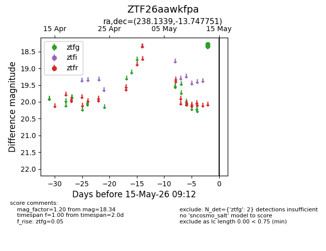
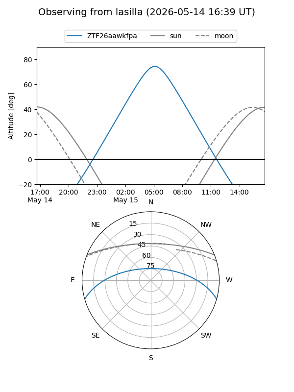
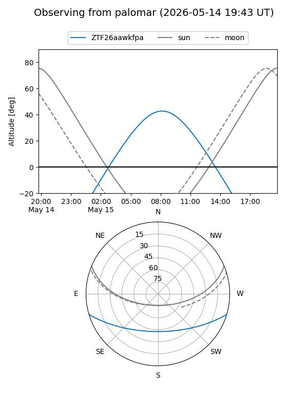

ZTF26aawkfpa
Target ZTF26aawkfpa at 2026-05-15 09:14
Aliases and brokers:
FINK: link
Lasair: link
ALeRCE: link
alt names
ZTF26aawkfpa (ztf,fink_ztf)
Coordinates:
equatorial (ra, dec) = 238.1339,-13.74775
equatorial (HMS+DMS) = 15:52:32.13,-13:44:51.90
galactic (l, b) = (355.7659,+29.99930)
Flags:
Photometry:
last ztfg=18.34
2 ztfg detections
Lightcurve

Visibility


Additional plots